『浅入深出』MySQL 中事务的实现
在关系型数据库中，事务的重要性不言而喻，只要对数据库稍有了解的人都知道事务具有 ACID 四个基本属性，而我们不知道的可能就是数据库是如何实现这四个属性的；在这篇文章中，我们将对事务的实现进行分析，尝试理解数据库是如何实现事务的，当然我们也会在文章中简单对 MySQL 中对 ACID 的实现进行简单的介绍。
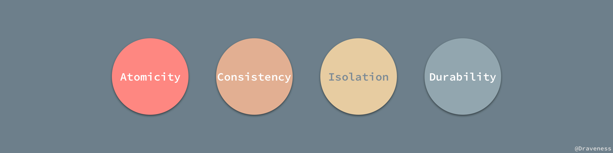
事务其实就是并发控制的基本单位；相信我们都知道，事务是一个序列操作，其中的操作要么都执行，要么都不执行，它是一个不可分割的工作单位；数据库事务的 ACID 四大特性是事务的基础，了解了 ACID 是如何实现的，我们也就清除了事务的实现，接下来我们将依次介绍数据库是如何实现这四个特性的。
原子性
在学习事务时，经常有人会告诉你，事务就是一系列的操作，要么全部都执行，要都不执行，这其实就是对事务原子性的刻画；虽然事务具有原子性，但是原子性并不是只与事务有关系，它的身影在很多地方都会出现。
由于操作并不具有原子性，并且可以再分为多个操作，当这些操作出现错误或抛出异常时，整个操作就可能不会继续执行下去，而已经进行的操作造成的副作用就可能造成数据更新的丢失或者错误。
事务其实和一个操作没有什么太大的区别，它是一系列的数据库操作（可以理解为 SQL）的集合，如果事务不具备原子性，那么就没办法保证同一个事务中的所有操作都被执行或者未被执行了，整个数据库系统就既不可用也不可信。
回滚日志
想要保证事务的原子性，就需要在异常发生时，对已经执行的操作进行回滚，而在 MySQL 中，恢复机制是通过回滚日志（undo log）实现的，所有事务进行的修改都会先记录到这个回滚日志中，然后在对数据库中的对应行进行写入。
这个过程其实非常好理解，为了能够在发生错误时撤销之前的全部操作，肯定是需要将之前的操作都记录下来的，这样在发生错误时才可以回滚。
回滚日志除了能够在发生错误或者用户执行 ROLLBACK 时提供回滚相关的信息，它还能够在整个系统发生崩溃、数据库进程直接被杀死后，当用户再次启动数据库进程时，还能够立刻通过查询回滚日志将之前未完成的事务进行回滚，这也就需要回滚日志必须先于数据持久化到磁盘上，是我们需要先写日志后写数据库的主要原因。
回滚日志并不能将数据库物理地恢复到执行语句或者事务之前的样子；它是逻辑日志，当回滚日志被使用时，它只会按照日志逻辑地将数据库中的修改撤销掉看，可以理解为，我们在事务中使用的每一条 INSERT 都对应了一条 DELETE，每一条 UPDATE 也都对应一条相反的 UPDATE 语句。
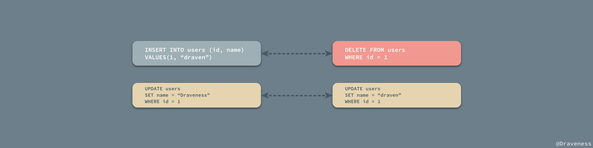
在这里，我们并不会介绍回滚日志的格式以及它是如何被管理的，本文重点关注在它到底是一个什么样的东西，究竟解决了、如何解决了什么样的问题，如果想要了解具体实现细节的读者，相信网络上关于回滚日志的文章一定不少。
事务的状态
因为事务具有原子性，所以从远处看的话，事务就是密不可分的一个整体，事务的状态也只有三种：Active、Commited 和 Failed，事务要不就在执行中，要不然就是成功或者失败的状态：
但是如果放大来看，我们会发现事务不再是原子的，其中包括了很多中间状态，比如部分提交，事务的状态图也变得越来越复杂。
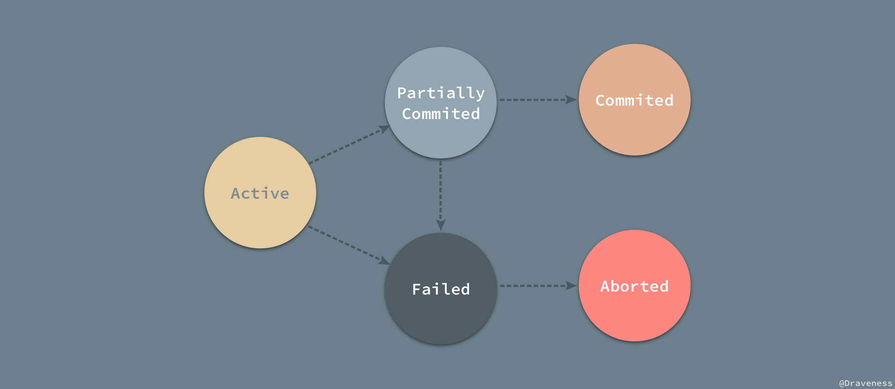
事务的状态图以及状态的描述取自 Database System Concepts 一书中第 14 章的内容。
- Active：事务的初始状态，表示事务正在执行；
- Partially Commited：在最后一条语句执行之后；
- Failed：发现事务无法正常执行之后；
- Aborted：事务被回滚并且数据库恢复到了事务进行之前的状态之后；
- Commited：成功执行整个事务；
虽然在发生错误时，整个数据库的状态可以恢复，但是如果我们在事务中执行了诸如：向标准输出打印日志、向外界发出邮件、没有通过数据库修改了磁盘上的内容甚至在事务执行期间发生了转账汇款，那么这些操作作为可见的外部输出都是没有办法回滚的；这些问题都是由应用开发者解决和负责的，在绝大多数情况下，我们都需要在整个事务提交后，再触发类似的无法回滚的操作。
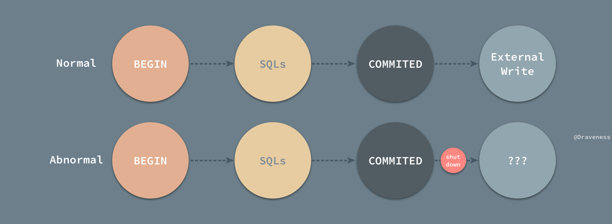
以订票为例，哪怕我们在整个事务结束之后，才向第三方发起请求，由于向第三方请求并获取结果是一个需要较长事件的操作，如果在事务刚刚提交时，数据库或者服务器发生了崩溃，那么我们就非常有可能丢失发起请求这一过程，这就造成了非常严重的问题；而这一点就不是数据库所能保证的，开发者需要在适当的时候查看请求是否被发起、结果是成功还是失败。
并行事务的原子性
到目前为止，所有的事务都只是串行执行的，一直都没有考虑过并行执行的问题；然而在实际工作中，并行执行的事务才是常态，然而并行任务下，却可能出现非常复杂的问题：
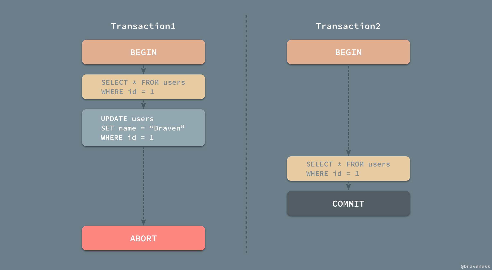
当 Transaction1 在执行的过程中对 id = 1 的用户进行了读写，但是没有将修改的内容进行提交或者回滚，在这时 Transaction2 对同样的数据进行了读操作并提交了事务；也就是说 Transaction2 是依赖于 Transaction1 的，当 Transaction1 由于一些错误需要回滚时，因为要保证事务的原子性，需要对 Transaction2 进行回滚，但是由于我们已经提交了 Transaction2，所以我们已经没有办法进行回滚操作，在这种问题下我们就发生了问题，Database System Concepts 一书中将这种现象称为不可恢复安排（Nonrecoverable Schedule），那什么情况下是可以恢复的呢？
A recoverable schedule is one where, for each pair of transactions Ti and Tj such that Tj reads a data item previously written by Ti , the commit operation of Ti appears before the commit operation of Tj .
简单理解一下，如果 Transaction2 依赖于事务 Transaction1，那么事务 Transaction1 必须在 Transaction2 提交之前完成提交的操作：
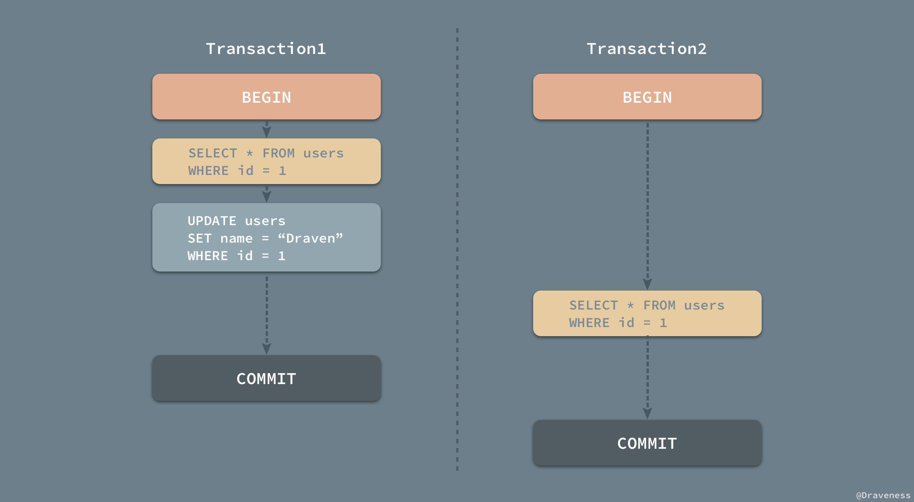
然而这样还不算完，当事务的数量逐渐增多时，整个恢复流程也会变得越来越复杂，如果我们想要从事务发生的错误中恢复，也不是一件那么容易的事情。
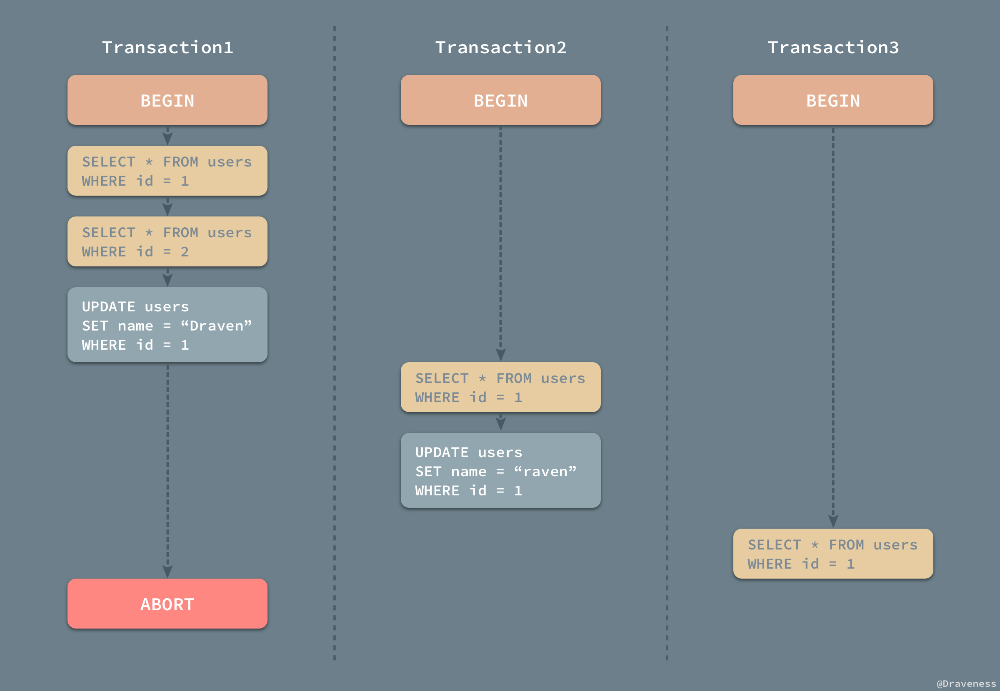
在上图所示的一次事件中，Transaction2 依赖于 Transaction1，而 Transaction3 又依赖于 Transaction1，当 Transaction1 由于执行出现问题发生回滚时，为了保证事务的原子性，就会将 Transaction2 和 Transaction3 中的工作全部回滚，这种情况也叫做级联回滚（Cascading Rollback），级联回滚的发生会导致大量的工作需要撤回，是我们难以接受的，不过如果想要达到绝对的原子性，这件事情又是不得不去处理的，我们会在文章的后面具体介绍如何处理并行事务的原子性。
持久性
既然是数据库，那么一定对数据的持久存储有着非常强烈的需求，如果数据被写入到数据库中，那么数据一定能够被安全存储在磁盘上；而事务的持久性就体现在，一旦事务被提交，那么数据一定会被写入到数据库中并持久存储起来。
当事务已经被提交之后，就无法再次回滚了，唯一能够撤回已经提交的事务的方式就是创建一个相反的事务对原操作进行『补偿』，这也是事务持久性的体现之一。
重做日志
与原子性一样，事务的持久性也是通过日志来实现的，MySQL 使用重做日志（redo log）实现事务的持久性，重做日志由两部分组成，一是内存中的重做日志缓冲区，因为重做日志缓冲区在内存中，所以它是易失的，另一个就是在磁盘上的重做日志文件，它是持久的。
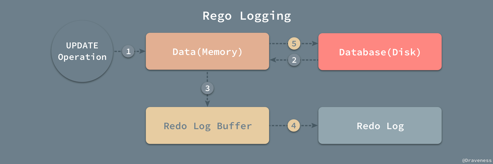
当我们在一个事务中尝试对数据进行修改时，它会先将数据从磁盘读入内存，并更新内存中缓存的数据，然后生成一条重做日志并写入重做日志缓存，当事务真正提交时，MySQL 会将重做日志缓存中的内容刷新到重做日志文件，再将内存中的数据更新到磁盘上，图中的第 4、5 步就是在事务提交时执行的。
在 InnoDB 中，重做日志都是以 512 字节的块的形式进行存储的，同时因为块的大小与磁盘扇区大小相同，所以重做日志的写入可以保证原子性，不会由于机器断电导致重做日志仅写入一半并留下脏数据。
除了所有对数据库的修改会产生重做日志，因为回滚日志也是需要持久存储的，它们也会创建对应的重做日志，在发生错误后，数据库重启时会从重做日志中找出未被更新到数据库磁盘中的日志重新执行以满足事务的持久性。
回滚日志和重做日志
到现在为止我们了解了 MySQL 中的两种日志，回滚日志（undo log）和重做日志（redo log）；在数据库系统中，事务的原子性和持久性是由事务日志（transaction log）保证的，在实现时也就是上面提到的两种日志，前者用于对事务的影响进行撤销，后者在错误处理时对已经提交的事务进行重做，它们能保证两点：
- 发生错误或者需要回滚的事务能够成功回滚（原子性）；
- 在事务提交后，数据没来得及写会磁盘就宕机时，在下次重新启动后能够成功恢复数据（持久性）；
在数据库中，这两种日志经常都是一起工作的，我们可以将它们整体看做一条事务日志，其中包含了事务的 ID、修改的行元素以及修改前后的值。
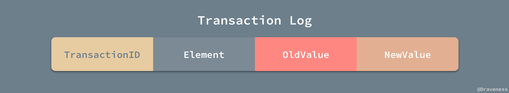
一条事务日志同时包含了修改前后的值，能够非常简单的进行回滚和重做两种操作，在这里我们也不会对重做和回滚日志展开进行介绍，可能会在之后的文章谈一谈数据库系统的恢复机制时提到两种日志的使用。
隔离性
其实作者在之前的文章 『浅入浅出』MySQL 和 InnoDB 就已经介绍过数据库事务的隔离性，不过问了保证文章的独立性和完整性，我们还会对事务的隔离性进行介绍，介绍的内容可能稍微有所不同。
事务的隔离性是数据库处理数据的几大基础之一，如果没有数据库的事务之间没有隔离性，就会发生在 并行事务的原子性 一节中提到的级联回滚等问题，造成性能上的巨大损失。如果所有的事务的执行顺序都是线性的，那么对于事务的管理容易得多，但是允许事务的并行执行却能能够提升吞吐量和资源利用率，并且可以减少每个事务的等待时间。
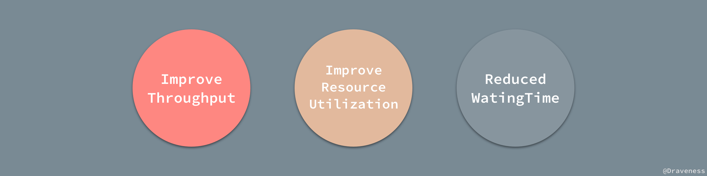
当多个事务同时并发执行时，事务的隔离性可能就会被违反，虽然单个事务的执行可能没有任何错误，但是从总体来看就会造成数据库的一致性出现问题，而串行虽然能够允许开发者忽略并行造成的影响，能够很好地维护数据库的一致性，但是却会影响事务执行的性能。
事务的隔离级别
所以说数据库的隔离性和一致性其实是一个需要开发者去权衡的问题，为数据库提供什么样的隔离性层级也就决定了数据库的性能以及可以达到什么样的一致性；在 SQL 标准中定义了四种数据库的事务的隔离级别：READ UNCOMMITED、READ COMMITED、REPEATABLE READ 和 SERIALIZABLE；每个事务的隔离级别其实都比上一级多解决了一个问题：
RAED UNCOMMITED：使用查询语句不会加锁，可能会读到未提交的行（Dirty Read）；READ COMMITED：只对记录加记录锁，而不会在记录之间加间隙锁，所以允许新的记录插入到被锁定记录的附近，所以再多次使用查询语句时，可能得到不同的结果（Non-Repeatable Read）；REPEATABLE READ：多次读取同一范围的数据会返回第一次查询的快照，不会返回不同的数据行，但是可能发生幻读（Phantom Read）；SERIALIZABLE：InnoDB 隐式地将全部的查询语句加上共享锁，解决了幻读的问题；
以上的所有的事务隔离级别都不允许脏写入（Dirty Write），也就是当前事务更新了另一个事务已经更新但是还未提交的数据，大部分的数据库中都使用了 READ COMMITED 作为默认的事务隔离级别，但是 MySQL 使用了 REPEATABLE READ 作为默认配置；从 RAED UNCOMMITED 到 SERIALIZABLE，随着事务隔离级别变得越来越严格，数据库对于并发执行事务的性能也逐渐下降。
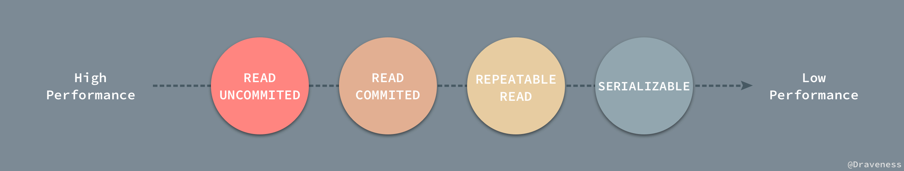
对于数据库的使用者，从理论上说，并不需要知道事务的隔离级别是如何实现的，我们只需要知道这个隔离级别解决了什么样的问题，但是不同数据库对于不同隔离级别的是实现细节在很多时候都会让我们遇到意料之外的坑。
如果读者不了解脏读、不可重复读和幻读究竟是什么，可以阅读之前的文章 『浅入浅出』MySQL 和 InnoDB，在这里我们仅放一张图来展示各个隔离层级对这几个问题的解决情况。
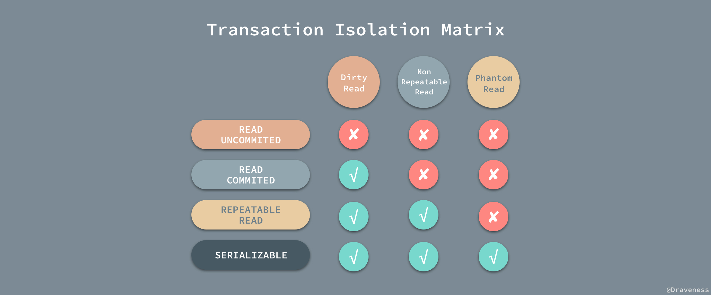
隔离级别的实现
数据库对于隔离级别的实现就是使用并发控制机制对在同一时间执行的事务进行控制，限制不同的事务对于同一资源的访问和更新，而最重要也最常见的并发控制机制，在这里我们将简单介绍三种最重要的并发控制器机制的工作原理。
锁
锁是一种最为常见的并发控制机制，在一个事务中，我们并不会将整个数据库都加锁，而是只会锁住那些需要访问的数据项， MySQL 和常见数据库中的锁都分为两种，共享锁（Shared）和互斥锁（Exclusive），前者也叫读锁，后者叫写锁。
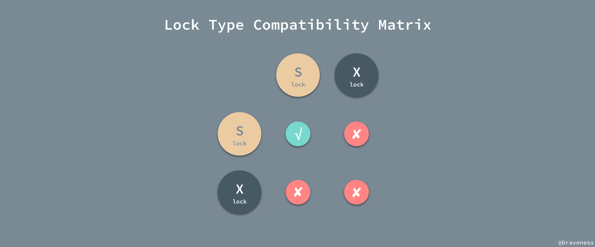
读锁保证了读操作可以并发执行，相互不会影响，而写锁保证了在更新数据库数据时不会有其他的事务访问或者更改同一条记录造成不可预知的问题。
时间戳
除了锁，另一种实现事务的隔离性的方式就是通过时间戳，使用这种方式实现事务的数据库，例如 PostgreSQL 会为每一条记录保留两个字段；读时间戳中报错了所有访问该记录的事务中的最大时间戳，而记录行的写时间戳中保存了将记录改到当前值的事务的时间戳。
使用时间戳实现事务的隔离性时，往往都会使用乐观锁，先对数据进行修改，在写回时再去判断当前值，也就是时间戳是否改变过，如果没有改变过，就写入，否则，生成一个新的时间戳并再次更新数据，乐观锁其实并不是真正的锁机制，它只是一种思想，在这里并不会对它进行展开介绍。
多版本和快照隔离
通过维护多个版本的数据，数据库可以允许事务在数据被其他事务更新时对旧版本的数据进行读取，很多数据库都对这一机制进行了实现；因为所有的读操作不再需要等待写锁的释放，所以能够显著地提升读的性能，MySQL 和 PostgreSQL 都对这一机制进行自己的实现，也就是 MVCC，虽然各自实现的方式有所不同，MySQL 就通过文章中提到的回滚日志实现了 MVCC，保证事务并行执行时能够不等待互斥锁的释放直接获取数据。
隔离性与原子性
在这里就需要简单提一下在在原子性一节中遇到的级联回滚等问题了，如果一个事务对数据进行了写入，这时就会获取一个互斥锁，其他的事务就想要获得改行数据的读锁就必须等待写锁的释放，自然就不会发生级联回滚等问题了。
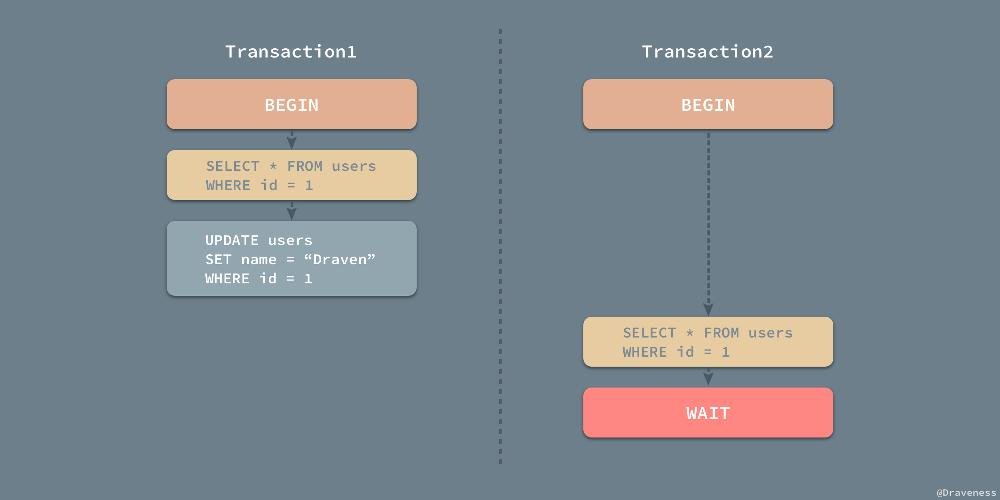
不过在大多数的数据库，比如 MySQL 中都使用了 MVCC 等特性，也就是正常的读方法是不需要获取锁的，在想要对读取的数据进行更新时需要使用 SELECT ... FOR UPDATE 尝试获取对应行的互斥锁，以保证不同事务可以正常工作。
一致性
作者认为数据库的一致性是一个非常让人迷惑的概念，原因是数据库领域其实包含两个一致性，一个是 ACID 中的一致性、另一个是 CAP 定义中的一致性。
这两个数据库的一致性说的完全不是一个事情，很多很多人都对这两者的概念有非常深的误解，当我们在讨论数据库的一致性时，一定要清楚上下文的语义是什么，尽量明确的问出我们要讨论的到底是 ACID 中的一致性还是 CAP 中的一致性。
ACID
数据库对于 ACID 中的一致性的定义是这样的：如果一个事务原子地在一个一致地数据库中独立运行，那么在它执行之后，数据库的状态一定是一致的。对于这个概念，它的第一层意思就是对于数据完整性的约束，包括主键约束、引用约束以及一些约束检查等等，在事务的执行的前后以及过程中不会违背对数据完整性的约束，所有对数据库写入的操作都应该是合法的，并不能产生不合法的数据状态。
A transaction must preserve database consistency - if a transaction is run atomically in isolation starting from a consistent database, the database must again be consistent at the end of the transaction.
我们可以将事务理解成一个函数，它接受一个外界的 SQL 输入和一个一致的数据库，它一定会返回一个一致的数据库。
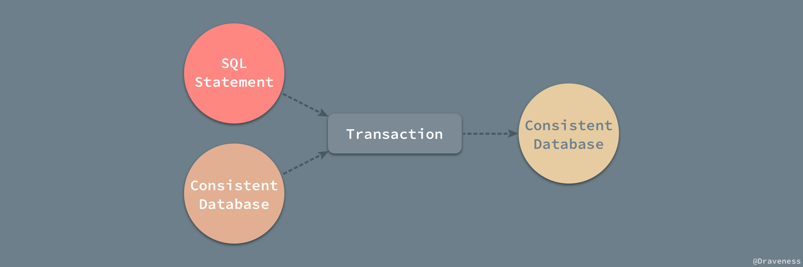
而第二层意思其实是指逻辑上的对于开发者的要求，我们要在代码中写出正确的事务逻辑，比如银行转账，事务中的逻辑不可能只扣钱或者只加钱，这是应用层面上对于数据库一致性的要求。
Ensuring consistency for an individual transaction is the responsibility of the application programmer who codes the transaction. - Database System Concepts
数据库 ACID 中的一致性对事务的要求不止包含对数据完整性以及合法性的检查，还包含应用层面逻辑的正确。
CAP 定理中的数据一致性，其实是说分布式系统中的各个节点中对于同一数据的拷贝有着相同的值；而 ACID 中的一致性是指数据库的规则，如果 schema 中规定了一个值必须是唯一的，那么一致的系统必须确保在所有的操作中，该值都是唯一的，由此来看 CAP 和 ACID 对于一致性的定义有着根本性的区别。
总结
事务的 ACID 四大基本特性是保证数据库能够运行的基石，但是完全保证数据库的 ACID，尤其是隔离性会对性能有比较大影响，在实际的使用中我们也会根据业务的需求对隔离性进行调整，除了隔离性，数据库的原子性和持久性相信都是比较好理解的特性，前者保证数据库的事务要么全部执行、要么全部不执行，后者保证了对数据库的写入都是持久存储的、非易失的，而一致性不仅是数据库对本身数据的完整性的要求，同时也对开发者提出了要求 - 写出逻辑正确并且合理的事务。
最后，也是最重要的，当别人在将一致性的时候，一定要搞清楚他的上下文，如果对文章的内容有疑问，可以在评论中留言，评论系统使用 Disqus 需要梯子。
References
- Database System Concepts
- 数据库事务
- How does MVCC (Multi-Version Concurrency Control) work
- How does a relational database work
- Implementing Transaction Processing using Redo Logs
- Implementing Transaction Processing using Undo Logs
- Undo/Redo Logging Rules
- MySQL 解密：InnoDB 存储引擎重做日志漫游
- ACID 中 C 与 CAP 定理中 C 的区别
- Disambiguating ACID and CAP